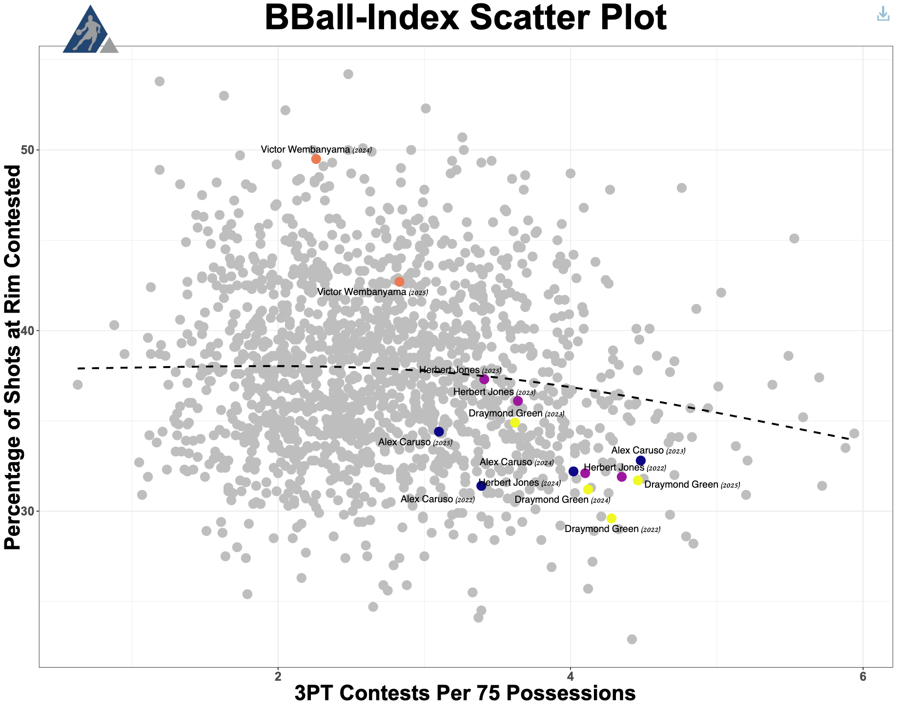

The NBA's Perimeter Problem
By Jack Bruvold | June 01, 2025
Introduction
The NBA has a problem at the perimeter. It’s undermining players and a key aspect of the sport. It's not the amount of shots getting put up at the three-point line, at least not directly. It's not even related to offense. The problem isn’t new either; it's plagued the game for as long as stats have been collected. Perimeter defense is hard to quantify.
Over the last decade, our ability to collect data in NBA games has moved forward by leaps and bounds. Stats that track screen dodging, boxing out, or versatility have helped put numerical descriptions on players’ defensive prowess. These stats can be combined to get a holistic picture of the point value that a player provides through their defense, like dRAPM does. While this is great for total defense, separating a player's contributions at the perimeter is hard to do with this overall rating. By utilizing the same statistics that go into an overall rating and isolating the parts that come from defense at the perimeter, we can create a value for this aspect of the game per 100 possessions, akin to a plus-minus for perimeter defense.
Quantifying/Methodology
First, we selected four players: a diverse set of defenders deemed positive on that side of the ball by the “eye-test.” Our players include the following: Alex Caruso, Herbert Jones (both players we expect to have good perimeter defense), Victor Wembanyama, and Draymond Green (players who are still defensively inclined but not at the perimeter). We examined their stats throughout the last three seasons (two for Wembanyama). With our defenders selected, we can begin to look at what goes into being a good perimeter defender and what point value is associated with that trait. As hinted at previously, a big part of the perimeter is the three-point shot. In quantifying this, we determined that a player can affect the three-point shot in two ways: diverting shots away from the perimeter and contesting shots.
The first comes by lowering the number of shots taken at the three-point line, which was done by examining the on-off differences in three-point attempts. Below are the shot charts for the four players while they are on the court vs. while off the court.
While Jones sees a decrease in the number of shots that are put up behind the arc, the other three see an increase. This can be explained away in Wembanyama's case because of the way he dominates the paint (leading to more shots being put up at a distance), but it is still perplexing for Caruso and Green. Because this is an on/off comparison, it helps to put context behind who each of the players plays with as well as who they are typically guarding. This is done by plotting the percentage of time each player spends guarding shot creators (who should be discouraged from shooting if guarded by a strong perimeter player) and the defensive impact of their teammates.
We see that while Herb and Caruso are similar in the amount of time they spend guarding shot creators (the highest in the league), Caruso suffers from his teammates on OKC and the Bulls being relatively strong defenders, contributing to a lower difference in the on/off analysis. Green is just less inclined to guard shot creators, which leads to him not being able to effectively lower the number of three-point attempts.
Next, we can see the number of points that each player saves through contesting shots, which come from contest metrics. While there are only total points saved through contests and those saved at the rim, a crude estimate for points saved at the perimeter can be found by subtracting the two. Below are the values of that calculation for each of the players.
Alex Caruso and Herb Jones both save points through their contests, while Wembanyama actually adds points by contesting. Surprisingly, Green leads among the four in the points saved through contests at the perimeter (he was a DPOY and has multiple All-Defensive Selections largely due to his interior presence). A quick look at a plot comparing three-point contests to rim shot contests could help us understand our results.
While Caruso and Jones have a similar number of points saved through contests, Caruso has a much higher percentage of those points coming from three-point attempts. This is also true for Green, who has a much higher percentage of points saved through contests at the perimeter. To isolate steals and other turnovers, the number of blocks per 100 possessions can be subtracted, leaving a new percentage of possessions that a player stops. We also included a plot of steals vs deflections in terms of the percentile of players.
Herb and Caruso are leading, which confirms conventional wisdom about their profiles, as they are both very good at creating deflections and stealing the ball. This is a place where Green falls behind on the perimeter, and while Wembanyama has a higher STOP%, this is from him recovering a lot of blocks.
Putting it all Together:
With these stops accounted for, we have all we need to produce a point value for each player for their defense at the perimeter. To do this, we bring together those three stats using the following equation:
Points Saved = -( mSTOP% * avg. Points Per Possession + Points Saved Through Contests + on/off 3PA%* avg. Points per 3PA)
Doing this for them, we get the final point value for each of the players' perimeter defense, where negative is better.
This more or less aligns with the level we thought each player would be at going into our analysis, with Herb and Caruso being very effective perimeter defenders, Wembanyana bringing most of his value in the paint, and Green being a neutral. However, we still have to check if this aligns with the other defensive metrics out there. A good one to compare to is NBA RAPM’s defensive plus minus, which breaks up a player's defensive impact in three different aspects: True Shooting %, Turnover %, and Rebound %. This is an all-encompassing defensive measurement, and the ratings for the four are: Caruso, +4.2, Jones, +2.0, Wembanyama, +3.6, and Green, +3.7. Going player by player, while Caruso is very impactful at the perimeter, he still has defensive value outside of this, like his ability to draw offensive fouls and block shots(which he does at 0.7 and 1.4 per 100 possessions, above league average). We see that Jones is outperforming his expected defensive value, which is most likely because the value that he brings at the perimeter is offset by his below-average impact on rebounding(-0.3 according to RAPM), which would bring his value more in line with the RAPM value. For Wembanyama, while he is a negative perimeter defender, he is an elite rim defender and blocker, as he saves 3 points per 100 possessions on rim contests alone, which would explain how he can still be a positive defender overall in plus-minus. Finally, for Green, he is right around neutral for value on the perimeter, which makes sense as he has a neutral impact on turnovers compared to league average, but is a positive rebounder. Overall, this way of trying to quantify defensive impact at the perimeter does a good job as its results align with other comparable statistics that we can see for each player, but could try to include other aspects, like drawing fouls or screen dodging, which are harder to account for.